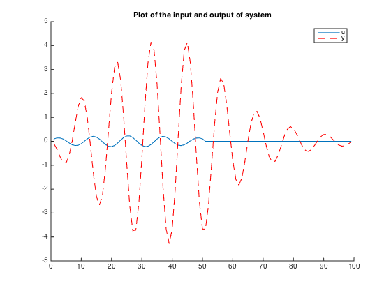
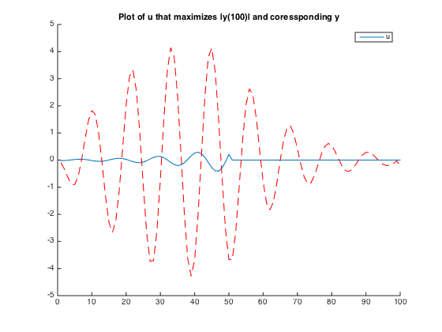

Contents
Part A
clear; close all;
A = [0.9 0.5;-0.5 0.7];
B= [1;-1];
C = [1 2];
for i = 1:99
for j = 1:i
G(i,j) = C*A^(i-1-(j-1))*B;
end
end
G(51:end,51:end) = 0;
[V,D] = eig(G'*G);
utemp = [V(1:50,99); zeros(49,1)];
y = G*utemp;
sum2 = y'*y;
disp(['The norm squared of y is : ' num2str(sum2)]);
figure;hold;
plot(utemp');
plot(y,'--r');
legend('u', 'y');
title('Plot of the input and output of system');
The norm squared of y is : 342.327
Current plot held

Part B
for i = 100
for j = 1:i
G100(j) = C*A^(i-1-(j-1))*B;
end
end
G100(51:100) = 0;
[V,D] = eig(G100'*G100);
u100 = [V(1:50,100); zeros(50,1)];
y100 = G100*u100;
figure;hold;
plot(u100);
plot([y;y100], '--r');
legend('u');
title('Plot of u that maximizes |y(100)| and coressponding y');
max = abs(y100);
disp(['The maximum value of |y(100)| is : ' num2str(max)]);
Current plot held
The maximum value of |y(100)| is : 0.20705
